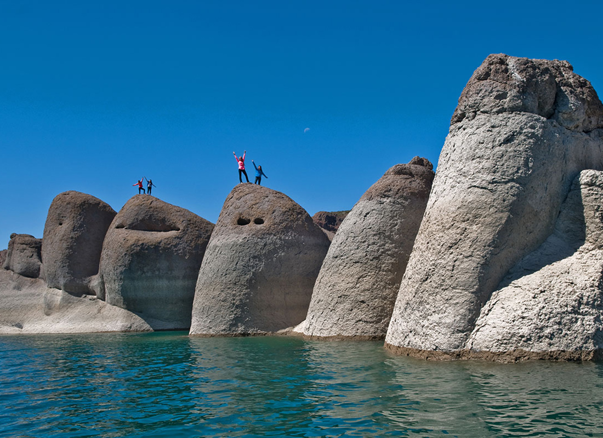
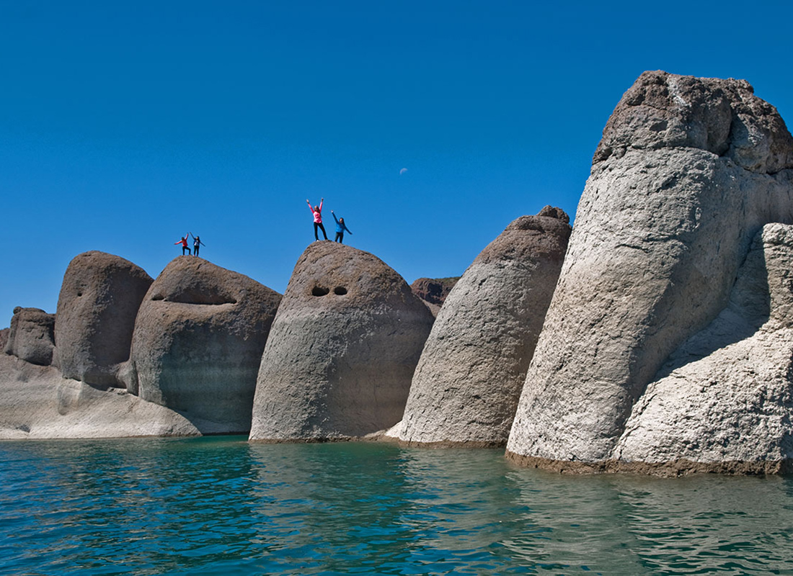

-1°c


Turismo
Mendoza presenta un sinfín de atractivos por descubrir, desde los
caminos que nos conducen a la Cordillera de los Andes por el Río
Mendoza o por Villavicencio y las rutas del vino conociendo bodegas de
producción artesanal y establecimientos de tipo industrial en la zona
de Maipú y Luján de Cuyo.
En esta sección podrás encontrar los
puntos turísticos imperdibles para tu próximo viaje a nuestra hermosa
provincia.
Reserva Natural Villavicencio
La Reserva Natural Villavicencio es un área natural protegida privada que conserva 60654 hectáreas que comprenden 3 ambientes: monte, cardonal y puna. Se encuentra en el departamento de Las Heras, Mendoza, Argentina. Fue creada en el año 2000. En 2017 fue denominada Sitio Ramsar por la por la Convención Internacional Ramsar sobre los Humedales, siendo la primera ANP privada de la Argentina en tener esta declaración.
Hotel Villavicencio
En 2013 el Hotel Termas de Villavicencio fue declarado Monumento Histórico Nacional. La Reserva conserva así patrimonio natural, cultural e histórico en su territorio. Se puede hacer un recorrido por sus alrededores: terrazas, jardines, diseñados por Carlos Thays hijo, y la Capilla recientemente restaurada.
Camino de caracoles
Antigua ruta que unió los puertos de Buenos Aires y Valparaíso durante la época colonial. Destaca su trazado sinuoso entorno a un paisaje único.
Mirador El Balcón
Impactante formación geológica de más de 100 metros de profundidad, lograda por la acción directa del viento y el agua.
Cruz de Paramillos
Límite de la Reserva, desde donde puede verse el Aconcagua, cerro más alto de América. Punto más alto de la formación de precordillera (3100 msnm). Testigo de la presencia jesuítica y su contribución al desarrollo minero de la zona.
Truck 4x4
Andes Truck y Reserva Villavicencio se unen para darte una experiencia única. Ingresa al corazón de la Reserva y conoce parajes únicos; la experiencia es una perfecta combinación de adrenalina y disfrute.
Villavicencio Park
Si lo que querés es pura adrenalina, vistas únicas y una aventura en las alturas, esta es tu oportunidad de vivir todo en un solo lugar: arborismo, tirolesa y zipline en Villavicencio Park.
Trekking
Aventurate en compañía de los guías y conocé los valores de conservación, cómo se conforma el paisaje y la biodiversidad de la Reserva Villavicencio ¡respirá el aire puro de montaña!

Las Leñas
En pleno corazón de la Cordillera de los Andes, en la provincia de Mendoza y a tan sólo 1.200km de Buenos Aires, se encuentra el centro de ski número 1 de América Latina: Las Leñas. La magia de este centro de ski de alta montaña es el resultado de la combinación entre naturaleza, confort, diversión, aventura y relax.
Su base está a 2.240 msnm y su cumbre a 3.430 metros.
Este complejo turístico internacional brinda unas vacaciones inolvidables para todos los amantes del ski y el snowboard. Cuenta con una calidad de nieve insuperable, gastronomía internacional e instalaciones hoteleras de primer nivel, dentro de un marco de seguridad y tranquilidad para toda la familia. Gracias a su ubicación geográfica, Las Leñas ofrece una prolongada temporada de nieve que se extiende desde el mes de junio hasta septiembre inclusive.


Ciudad de Mendoza

La Ciudad de Mendoza es la capital política, administrativa y financiera provincial. Fue el lugar elegido por Pedro del Castillo para fundar la ciudad que en tiempos remotos fue el centro cívico provincial donde se levantó el Cabildo de Mendoza, la Iglesia Matriz y Plaza Mayor. Para resguardar las ruinas de estas edificaciones se construyó el Museo del Área Fundacional donde los turistas pueden adentrarse en la historia recorriendo cada una de las salas que representan el paso del tiempo.
Un devastador terremoto en el año 1861 dejó bajo los escombros a la antigua ciudad y fue el motivo para trasladarla hacia el lugar actual que la alberga y que la caracteriza por sus amplias calles implantadas con árboles que dibujan túneles y kilómetros de acequias que transportan el agua de los ríos de montañas.
Las plazas embellecen la ciudad, cada una de ellas con una marcada identidad y que le rinden homenaje a países que colaboraron para construir la nueva ciudad u otros sucesos históricos destacados y es así que pueden visitarse la Plaza Independencia, Plaza San Martín, Plaza España, Plaza Italia y Plaza Chile. Como parte de la idiosincrasia mendocina se destaca el Paseo Peatonal Sarmiento con sus pérgolas, floridos canteros, comercios y bares que invitan a sentarse a tomar alguna bebida al aire libre.
El Parque Gral. San Martín es el exponente máximo de la labor del hombre que transformó el pedemonte desértico en un oasis artificial en el que desde la entrada al mismo por los imponentes portones de estilo inglés, grupos escultóricos, espacios verdes, fuentes de agua, lago artificial y clubes deportivos le han dado un sello único a todo aquel que lo recorre caminando o en vehículo. En él también se encuentra el Estadio Mundialista Malvinas Argentinas, el Ecoparque y el Cerro de la Gloria donde puede apreciarse una obra escultórica de gran magnitud que es el monumento al Ejército Libertador.
Mendoza es sinónimo de vino y los mendocinos le rinden tributo todos los años durante los meses de enero y febrero con fiestas departamentales y culminando el primer fin de semana de marzo con el festejo máximo, la “Fiesta Nacional de la Vendimia” que se desarrolla en el Teatro Griego Frank Romero Day, ubicado en las inmediaciones del Parque Gral. San Martín y donde el escenario mayor al aire libre cuenta con la escenografía natural de los cerros circundantes.
La Arístides es la más visitada y renombrada de las arterias sobre la cuales se ha instalado la noche joven de Mendoza. Arístides Villanueva ofrece restaurantes, barcitos, irish pubs unos al lado de los otros y está muy cerca del centro en taxi, para quienes no tienen auto. Es ideal como "previa" para luego ir a bailar y está preparada para recibir al extranjero hablando su mismo idioma. Arístides tiene brillo y elegancia y cuando llega el fin de semana, no cabe un alfiler y la diversión está asegurada.
Cacheuta y Potrerillos
Cacheuta posee aguas termales que oscilan entre 28°C y 40°C en distintos manantiales. Actualmente, la oferta termal con sus instalaciones especiales permite disfrutar de los beneficios de estas aguas en las unidades especiales del Hotel Termas de Cacheuta con su spa, integrado a un Parque de Agua Termal que posee quinchos, churrasqueras, restaurantes, un almacén para provisiones y una base de turismo de aventura.
En este pueblo también se encuentra la vieja Estación de Cacheuta y su principal protagonista es el cruce del rio a través del pintoresco Puente Colgante. En sus inmediaciones se destacan los artesanos del lugar que ofrecen sus productos regionales a los turistas, como así también, una diversa oferta gastronómica o de alojamiento en cabañas. En 2018 los distritos de Cacheuta y Potrerillos volvieron a unirse por un túnel sobre la RP82 ingresando a la villa por la ruta del perilago.
Enclavado al oeste se encuentra Potrerillos, lugar donde se encuentra el Dique Potrerillos dotado de gran belleza. En la localidad de nombre homónimo, a su interior, existen varias villas de montaña (Las Chacritas, El Carmelo, Las Carditas, El Salto, Manantiales, Villa de San Jorge, Las Vegas, Piedras Blancas, Vallecitos y Los Zorzales) muy pintorescas, con casas de fin de semana, camping, sitios para practicar senderismo y escalada en roca, todas ubicadas en las cercanías del Cordón del Plata.
El valle de Potrerillos al pie del Cordón del Plata es el lugar emblemático para los amantes de la aventura y la naturaleza, donde el rafting, trekking, canopy, cabalgatas, son los protagonistas.
En la localidad de Vallecitos, en una de las quebradas del cordón antes mencionado, existe la pista de esquí más antigua de la provincia de Mendoza y una serie de refugios de montaña. Desde esa localidad, se accede a los cerros más importantes del Cordón del Plata, tal como El Plata, Mausy, Rincón, Vallecitos, Lomas Amarillas, Franke, San Bernardo, Lomas Blancas y otros. De manera permanente, los habitantes de dicha localidad, en todo el año, no superan las doce personas, constituido básicamente por refugieros.
San Rafael
Cañón del Atuel
El Cañón comienza en el Embalse El Nihuil a 75 km de la ciudad de San Rafael y tiene su desembocadura varios kilómetros aguas abajo del Embalse Valle Grande, con una extensión de unos 50 km y una profundidad promedio de 260 m.
Su recorrido se encuentra acompañado por el resto de las centrales hidroeléctricas del sistema de generación de energía del Atuel, a la vera de cuyos embalses (Aisol y Tierras Blancas) se forman encantadores espacios verdes, ideales para realizar actividades como mountain bike, avistaje de cóndores, montañismo, senderismo y trekking, entre otras.
Valle Grande
Enmarcado por la hermosura del Cañón del Atuel y las aguas turbulentas del río del mismo nombre, el rafting, kayak, doky y cool river aportan una cuota de emoción incomparable. Quienes lo prefieran podrán llegar hasta el embalse de la presa Valle Grande y deleitarse con paseos en catamarán y pesca deportiva.
Las formaciones montañosas que modelan el relieve del lugar permiten disfrutar de actividades como el trekking, rappel, senderismo, escalada y tirolesa; vuelos en parapente, safaris fotográficos y cabalgatas. Los amantes de la aventura sobre ruedas serán atrapados por las travesías en 4 x 4, cuatriciclo o enduro. En este bello paraje encontraremos una variada oferta en alojamiento compuesta por hoteles, cabañas y casas de fin de semana. La propuesta se completa con opciones gastronómicas que satisfacen todos los paladares.
Los Reyunos
A 35 Km de la ciudad de San Rafael, nos encontramos con la presa Los Reyunos, un hipnotizante espejo de agua que combina una sinfonía de verdes y turquesas, invita a los viajeros a realizar distintas actividades como pesca de salmónidos y pejerreyes; alquilar embarcaciones, realizar cabalgatas, caminatas y mountain bike; buceo, tirobangi, rappel, senderismo y un sinfín de otras prácticas que conjugan a la perfección con el majestuoso entorno natural.
La particularidad que tiene este espejo de agua artificial es que es uno de los pocos diques del país que cuenta con el sistema de rebombeo permitiendo recuperar el agua erogada al invertir sus turbinas para reutilizar este importante elemento para este gran oasis del sur mendocino.
El Sosneado
Pequeño paraje a 142 km. de la ciudad, zona cordillerana de más de 60 millones de años de antigüedad, es surcado por las aguas del Río Atuel y se encuentra inmerso en los cercanos paisajes que anuncian la presencia de la Cordillera de Los Andes, invitando a disfrutar de la extrema serenidad y la aventura que reina en las montañas. Ideal para realizar actividades al aire libre que permiten el contacto directo con la Naturaleza en una experiencia inolvidable. Acampar rodeados de la soledad que reina en el ambiente, lleva esta aventura a su máximo nivel.
Realizar una travesía 4 x 4, trepando por los caminos sinuosos de las elevaciones, practicar el andinismo si las alturas son su pasión, crearán momentos inolvidables colmados de adrenalina. Este escenario también es el indicado para las competencias de enduro y mountain bike.
Otra opción son las atrapantes cabalgatas para descubrir magníficos tesoros como la Cueva del Indio, testimonio de la presencia de los pueblos originarios en la región o aquella que acerca a los viajeros hasta los restos del famoso avión de los rugbiers uruguayos, cuya epopeya de supervivencia inspirara la creación de las películas VIVEN y La Sociedad de la Nieve.
Una de las bellezas naturales del lugar es la Laguna de El Sosneado, donde la pesca es una de las alternativas más elegida, o las ruinas del antiguo Hotel Termas El Sosneado que aún posee al aire libre las piletas de aguas templadas en funcionamiento.

 

Valle de Uco
La mítica Ruta 40 es el gran portal turístico que recorre el Valle de Uco conformado por los departamentos de San Carlos, Tunuyán y Tupungato, es una verdadera postal enmarcada entre el Cordón del Plata y el Portillo, con la vista coronada por el Cerro Tupungato, que domina todas las tierras.
Por el pintoresco camino de los Cerrillos en Tupungato se encuentra el mirador del Cristo Rey; un lugar religioso con una gigante escultura de Jesucristo se impone en el valle y desde donde pueden apreciarse variados paños con cultivos de frutales de pepita y carozo, como así también hierbas aromáticas, junto a extensos viñedos y alamedas.
El Cordón del Plata entre las vegas del Alto de Las Carreras, sitio de históricas estancias jesuíticas ganaderas y actualmente zona productora de cebada, papa y alfalfa, se integra al circuito del Valle de Potrerillos (Luján de Cuyo). La imponente Quebrada del Cóndor es uno de los magníficos lugares para disfrutar a pleno una cabalgata y observar nidos de cóndores.
Esta zona se destaca por la producción de excelentes sidras, jugos, conservas y esencias, obtenidas en establecimientos industriales y bodegas de alta gama. Los Caminos del Vino constituyen una apasionante atracción, en la cual la gastronomía gourmet maridada con vinos consagrados, alojamientos temáticos y emprendimientos artesanales se combinan para ofrecer una receta local para alcanzar la más sabrosa placidez.
El Manzano Histórico, al pie del Cordón del Portillo fue escenario de una de las históricas rutas del Ejército de los Andes, distinguiéndose como atractivos el Monumento Retorno a la Patria, que rememora el reposo del guerrero a su regreso a suelo argentino. Complementan este sitio la zona de campings, estación piscícola, centro de interpretación y Vía Crucis.
Entre los eventos del calendario de festividades sobresalen el Festival Nacional de la Tonada que se realiza en el mes de febrero en Tunuyán y la Fiesta de la Tradición de San Carlos en el mes de noviembre.
Parque Provincial Aconcagua

El Parque Provincial Aconcagua es el atractivo emblema de esta zona cuya temporada se extiende desde noviembre a abril. Los andinistas de todo el mundo llegan con el objetivo de alcanzar la cima o simplemente poder realizar un trekking corto o largo entre caprichosas geoformas, arroyos y nieves perennes.
Se ubica en el noroeste de la provincia de Mendoza, departamento Las Heras, se encuentra a 165 km de la ciudad de Mendoza, y a 75 km de Uspallata, por la RN7, que aloja al cerro Aconcagua, de 6962.8 msnm.
En 1983 fue declarado área natural protegida. Es una de las 17 reservas naturales que forman el sistema de áreas naturales protegidas de la provincia de Mendoza.
El parque alberga grandes glaciares, que actúan como una reserva hídrica. Se encuentran importantes sitios arqueológicos. Es el escenario preferido para los andinistas.
La Laguna glaciaria de Horcones, a 2.950 msnm, se alimenta de las aguas de deshielo del cerro Tolosa, con un perímetro no mayor a los 80 metros. Esta laguna es parte de un pequeño humedal formado por cinco lagunas y vegas; estos humedales se caracterizan por presentar una diversidad biológica de plantas y animales.

Ruta del Vino
Mendoza tiene más de 130 bodegas que abren sus puertas para deleitarnos con sus diferentes variedades de vino: blanco, tinto, malbec, cabernet sauvignon y cabernet franc, entre tantas otras. Una experiencia para principiantes y expertos catadores. Acá te traemos cinco imperdibles para que tengas en cuenta a la hora de viajar.
-
Salentein, en Valle de uco
Con un paisaje privilegiado, Salentein está compuesto por tres fincas entre los 1050 y 1700 msnm, a los pies de la Cordillera de los Andes. En esta bodega convergen el arte, la arquitectura, la gastronomía y el buen vino.
Salentein produce 2 millones de litros de vino por año, y ofrece distintos tours para recorrer su bodega y almorzar en su restaurante. ¡Un must para no perderse!
-
Lagarde, en Luján de Cuyo
Esta bodega fue fundada en 1897 y cuenta, hoy en día, con viñedos orgánicos y un restaurante reconocido a nivel internacional. Además de una increíble visita por su bodega, aquí se encuentra Fogón, un restaurante con mesas al borde del viñedo.
El mismo fue elegido en 2021 por Trip Advisor como uno de los mejores de América del Sur en la categoría "cocina elegante". Aquí podés optar por un menú de 7 o 4 pasos, o por elección de comida a la carta. Sin dudas, es una parada imperdible en tu viaje.
-
Rutini Wines, en Valle de Uco
Rutini Wines tiene 255 hectáreas de viñedos, en altitudes que van desde los 1.050 hasta los 1.200 msnm. La bodega ofrece vinos de excepcional, como los conocidos Rutini, Trumpeter, Encuentro o Antología.
Durante la visita, los guías enseñan cuáles son los pasos de producción del vino y cuentan la historia de la familia. El tour culmina con la degustación de dos vinos de la casa.
-
Chandon, en Luján de Cuyo
Si dejamos de lado a los vinos por un rato, una de las bodegas de espumantes más famosas de Mendoza es la Bodega Chandon. La misma se encuentra en la localidad de Agrelo y ofrece un tour guiado con degustación de varietales de espumantes.
Durante el recorrido podés visitar los viñedos, la fábrica y la cava, y conocer la historia del champagne y cómo es su proceso de producción. Además, cuenta con un moderno bistró con platos elaborados especialmente para maridar con sus espumantes.
-
Zuccardi, en Valle de Uco
En 2019 fue elegido como el mejor viñedo del mundo, y creemos que esa es una razón más que suficiente para que la sumes a tu lista. En Zuccardi podés conocer los distintos espacios de la bodega, degustar sus vinos, y almorzar en su restaurante Piedra Infinita Cocina.
Además de disfrutar de una increíble vista a los viñedos, los comensales aquí pueden probar un menú de 4 pasos creado especialmente con productos regionales y acompañarlos con los mejores vinos Zuccardi.
¿En qué época conviene hacer la Ruta del Vino?
Te recomendamos visitar Mendoza en febrero, marzo y abril especialmente, porque es la época de la vendimia y todas las bodegas funcionan a la perfección. Acá vas a poder apreciar la cosecha de las uvas, y probarlas directamente de las plantas. ¡No vas a poder creer su sabor!
Si decidís viajar en estas fechas recordá reservar todo con anticipación, porque son muchas las personas que, como vos, quieren vivir la experiencia de ver funcionar la bodega en sus mejores meses. Igualmente, si en estas fechas se te complica viajar, ¡no te preocupes! Mendoza es un excelente destino en toda época del año.
Podés encontrar más información sobre el mundo del vino en nuestra sección Tierra del vino.